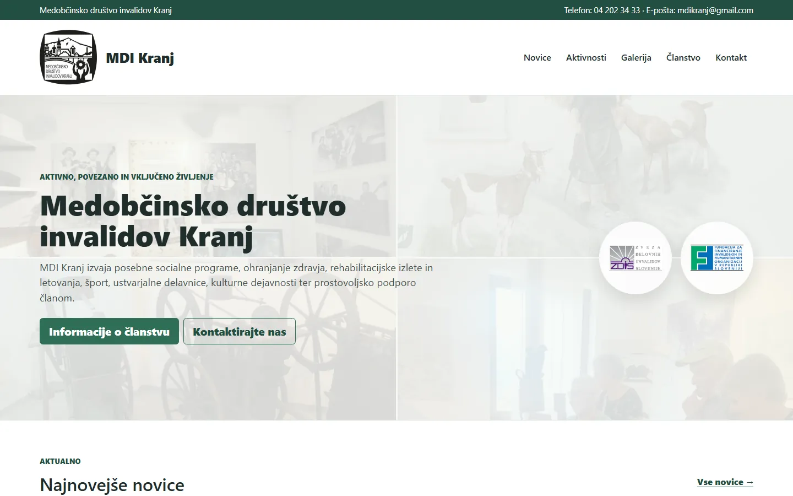

MDI Kranj
The website of an association of people with disabilities, built so the staff can run it without a developer.
- Year
- June to July 2026
- Built with
- Eleventy, Decap CMS, Cloudflare, JavaScript, TypeScript
- My part
- Everything, as student work

The problem
Medobčinsko društvo invalidov Kranj needed a website where members find news, activities, the yearly schedule and photos from events, next to membership information, programmes, office hours and contacts. The staff had to be able to publish all of it themselves.
What I built
- A static site generated with Eleventy and published on Cloudflare.
- An editing interface in Decap CMS. Editors log in and write; the changes are saved to GitHub, and Cloudflare rebuilds and publishes the site.
- Automatic image handling: photos are resized and converted to WebP before upload.
- Written documentation for the association.
Result
The site is live and the association adds its own news, events and photos.